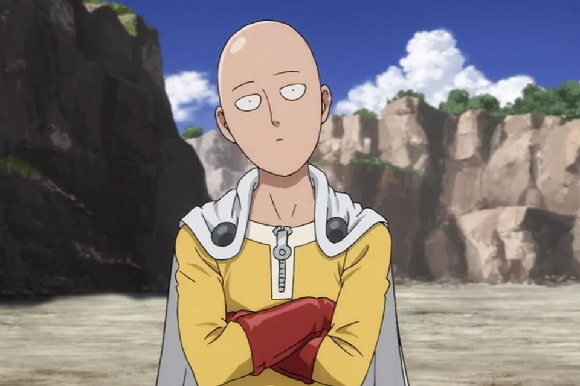

Conheça o Saitama

Antes de se tornar um heroi, o protagonista Saitama tinha cabelo, e sua expressão era muito diferente da que é vista após essa mudança.

Saitama, o protagonista de One-Punch Man, perdeu o cabelo devido a um esforço extremo para quebrar os limites do seu corpo.
Devido ao seu grande poder e por ser praticamente indestrutível, Saitama é uma pessoa indiferente.